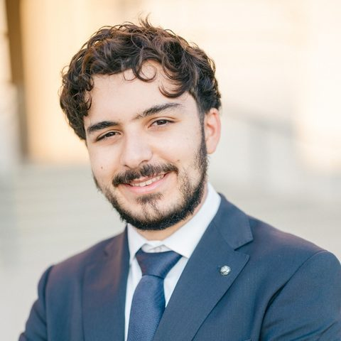

UCLA DGSOM
MS4 · 2027
Medical Student · UCLA · Class of 2027
Kameel Khabaz
Interested in interventional radiology, image analysis, and machine learning.

01About
I am a medical student at the David Geffen School of Medicine at UCLA (Class of 2027) with an interest in interventional radiology. My research uses image analysis and machine learning to study vascular, oncologic, and musculoskeletal disease.
I graduated from the University of Chicago in 2023 with a B.A. in Biological Sciences and a minor in Computer Science. I have also worked as a data science/machine learning intern at BigHat Biosciences, and I co-founded SyriaScript, a data science and machine learning course for students in conflict-affected regions.
Outside of medicine, I play tennis and hike.
02Research
- Aortic dissectionMeasuring aortic shape from CT to study how type B dissections progress and respond to endovascular repair. With Luka Pocivavsek, MD, PhD, at the University of Chicago.
- Prostatic artery embolizationAnatomic predictors of symptom improvement after PAE. With Justin McWilliams, MD, at UCLA.
- Soft-tissue sarcomaAn MRI-based model for predicting recurrence of upper-extremity soft-tissue sarcoma.
- Musculoskeletal embolizationOutcomes and cost-effectiveness of transarterial embolization for adhesive capsulitis.
03Publications
Selected. Full list on Google Scholar.
#01/07Prostatic urethral angle and symptom response after prostatic artery embolization: a retrospective studyJ Vasc Interv Radiol · 2026
Whether the angle of the prostatic urethra on pre-procedure imaging is associated with how much symptoms improve after prostatic artery embolization.
Khabaz K, McNamara G, Pahwa A, McWilliams JP. doi:10.1016/j.jvir.2026.108898
#02/07Transarterial embolization versus manipulation under anesthesia and arthroscopic capsular release for refractory adhesive capsulitis: a cost-effectiveness analysisCardiovasc Intervent Radiol · 2026
Compares the cost-effectiveness of embolization with the two standard procedures for frozen shoulder that has not improved with conservative care.
Khabaz K, Alananzeh R, Alkhani L, et al. doi:10.1007/s00270-026-04563-8
#03/07Retrograde aortic endograft side-branch design is associated with delayed cervical branch filling: a fluid mechanics scaling analysisJVS-Vascular Science · 2026
Uses fluid-mechanics scaling to relate the design of branched aortic endografts to delayed filling of the head and neck vessels.
Dhara S, Khabaz K, McIntyre M, Malo N, Peev M, Pocivavsek L. doi:10.1016/j.jvssci.2026.100419
#04/07Transarterial embolization for refractory adhesive capsulitis and related tendinopathies: a systematic review and meta-analysisJ Vasc Interv Radiol · 2025
Pools published outcomes of transarterial embolization for frozen shoulder and related tendon pain.
Allaw S*, Khabaz K*, Yu Q, Ahmed O. doi:10.1016/j.jvir.2025.10.027
#05/07Limitations of currently available sarcoma prediction tools in a large contemporary upper extremity soft tissue sarcoma cohortJ Surg Oncol · 2025
Tests how well existing sarcoma prediction tools perform in a large modern cohort of upper-extremity soft-tissue sarcoma.
Newman-Hung NJ*, Khabaz K*, Ding R, et al. doi:10.1002/jso.70043
#06/07Temporal geometric mapping defines morphoelastic growth model of type B aortic dissection evolutionComput Biol Med · 2024
Tracks aortic shape across serial CT scans to model how type B dissections change over time.
Khabaz K, Kim J, Milner R, Nguyen N, Pocivavsek L. doi:10.1016/j.compbiomed.2024.109194
#07/07The geometric evolution of aortic dissections: predicting surgical success using fluctuations in integrated Gaussian curvaturePLOS Comput Biol · 2024
Uses fluctuations in aortic surface curvature measured on CT to help predict outcomes after endovascular repair.
Khabaz K, Yuan K, Pugar J, et al. doi:10.1371/journal.pcbi.1011815
04News
- 2026-05Interview with SIR’s IR Quarterly (Inside Access)
- 2026-01GEST Physicians in Training Scholarship
- 2025-08RSNA Medical Student Research Grant
05Education
- David Geffen School of Medicine at UCLAM.D. · 2027
The University of ChicagoB.A. · 2023
B.A. in Biological Sciences (Quantitative Biology), minor in Computer Science.